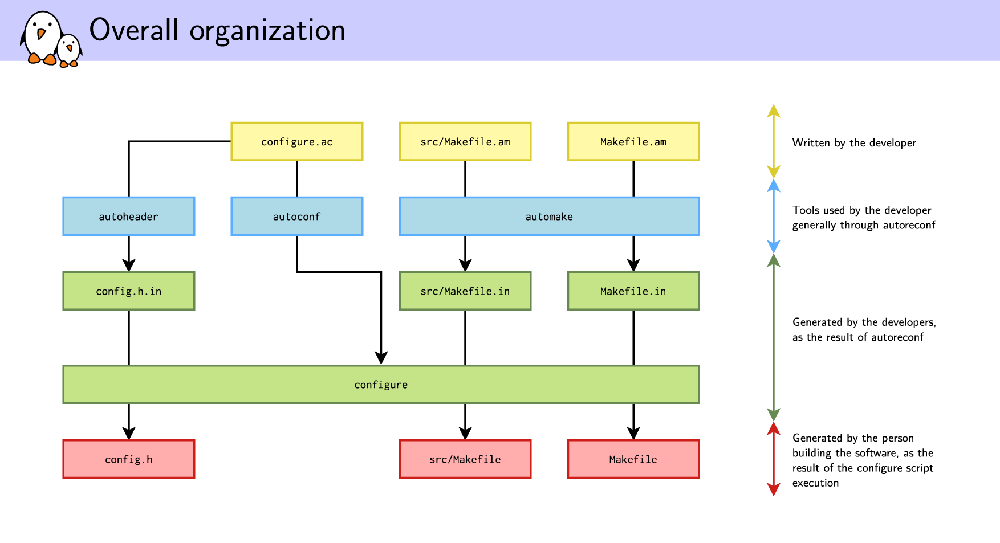

General Programming Knowledge
Contents
Autotools
Also known as GNU Build System.
Well descripted at Wiki
References
Overall description
-
Flow diagram of autoconf and automake: original image is here

-
Overall organization from petazzoni-autotools-tutorial.pdf original image is here

{kind=link}
{kind=link}
Regenerating autotools files: autoreconf
- To generate all the files used by autotools, you could call automake, autoconf, aclocal, autoheader, etc. manually.
- But it is not very easy and efficient.
- A tool called autoreconf automates this process
- Useful option: -i or –install, to ask autoreconf to copy missing auxiliary files
- Always use autoreconf!
configure.ac language
- configure.ac is a shell script.
- it used to be named configure.in but this name is now deprecated
- Processed through the m4 preprocessor
- Shell script augmented with special constructs for portability:
-
AS_IFinstead of shellif ... then .. fi -
AS_CASEinstead of shellcase ... esac
-
Some Macros
-
AC_INIT(package, version, [bug-report], [tarname], [url])- Every configure script must call AC_INIT before doing anything else that produces output.
-
AC_OUTPUT- Every configure.ac, should finish by calling AC_OUTPUT.
- Generates and runs config.status, which in turn creates the makefiles and any other files resulting from configuration.
-
AC_PREREQ- Verifies that a recent enough version of autoconf is used
-
AC_PROG_CC, AC_PROG_CXX, AC_PROG_AWK, AC_PROG_GREP, AC_PROG_LEX, AC_PROG_YACC- makes sure a compiler, awk, grep, etc. is available
-
AC_CONFIG_FILES (file..., [cmds], [init-cmds])- Make AC_OUTPUT create each file by copying an input
file(by defaultfile.in), substituting the output variable values. - Example:
AC_CONFIG_FILES([Makefile src/Makefile])
- Make AC_OUTPUT create each file by copying an input
- Many other macros in Manual
Output variables
- autoconf will replace
@variable@constructs by the appropriate values in files listed inAC_CONFIG_FILES - Long list of standard variables replaced by autoconf
- Additional shell variables declared in configure.ac can be replaced using
AC_SUBST- The following three examples are equivalent:
AC_SUBST([FOO], [42])FOO=42 AC_SUBST([FOO])AC_SUBST([FOO]) FOO=42
- The following three examples are equivalent: